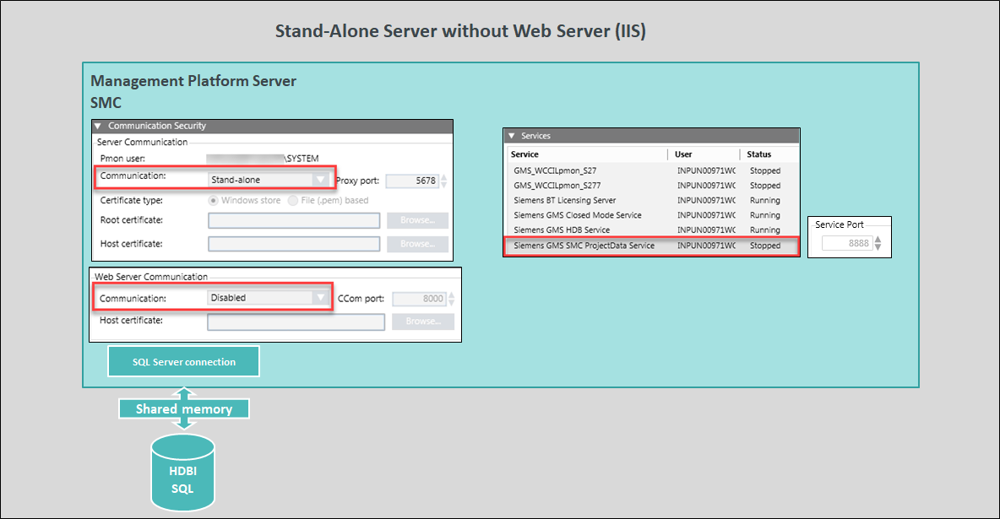

Stand-Alone System
On a single dedicated station, you can set up Desigo CC Server with database server.
The SMC and Installed Client are deployed with server installation. You can work with a Server project when you launch an Installed Client.

Since there is no web server you can leave the Web Server Communication field to Disabled.
Since there is no outside communication, no need to open the firewalls for communication. It is recommended to stop the GMS SMC Project Data Service to stop any communication over the service port.

NOTE:
A stand-alone system is secure in regards to attacks from the outside. However, installation guidelines for closing outside communication by firewall settings, virus scanner, and backup must be followed to secure the system!
You can also setup a stand-alone system with local web server (IIS). (see Stand-Alone System with Local Web Server (IIS))